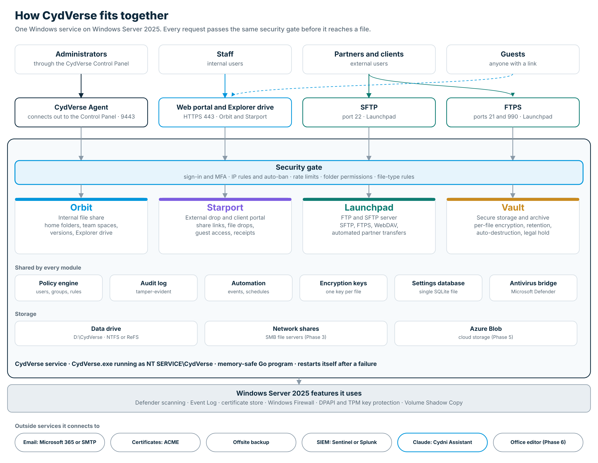
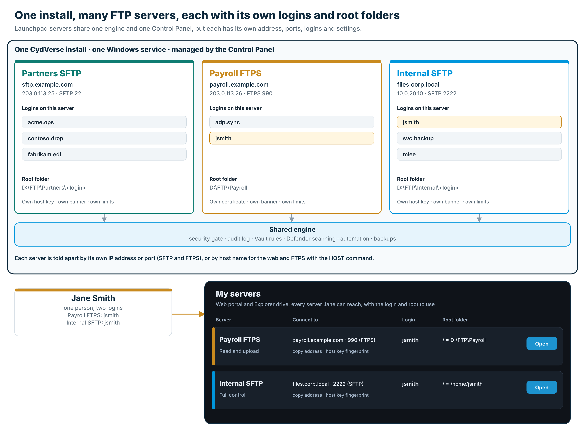
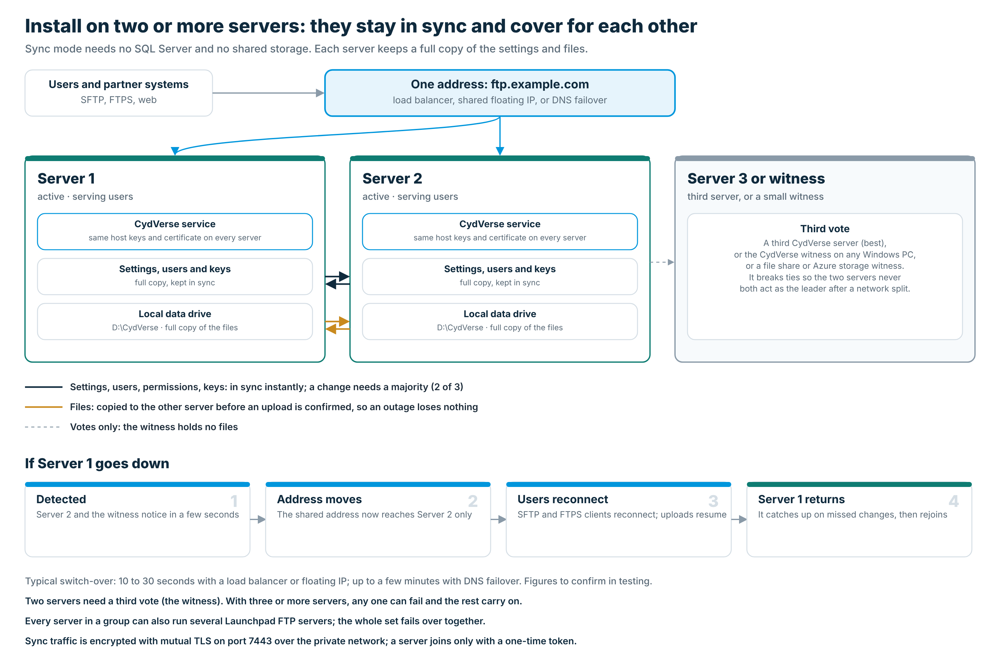
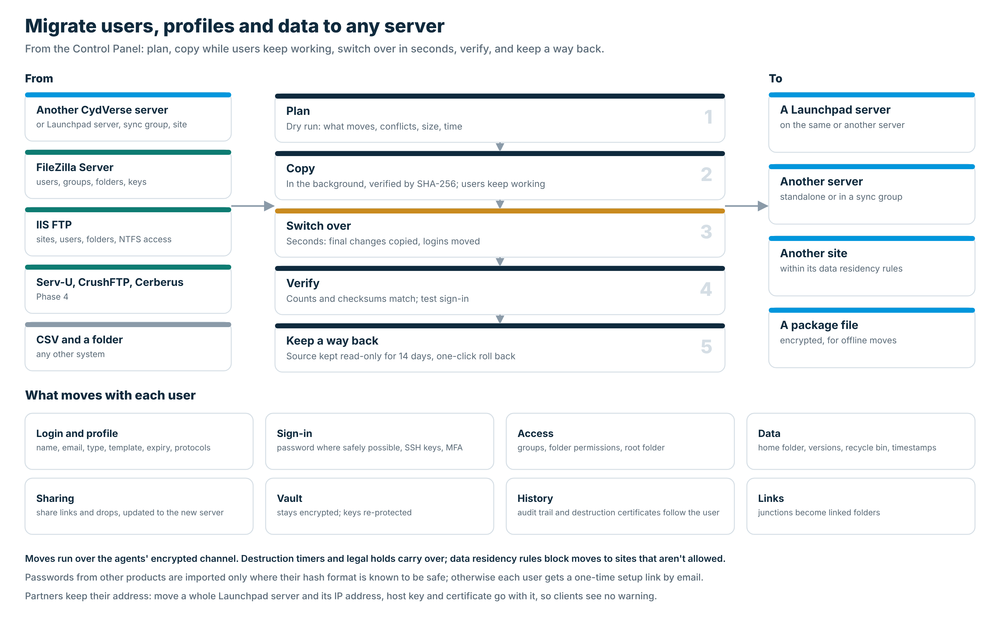
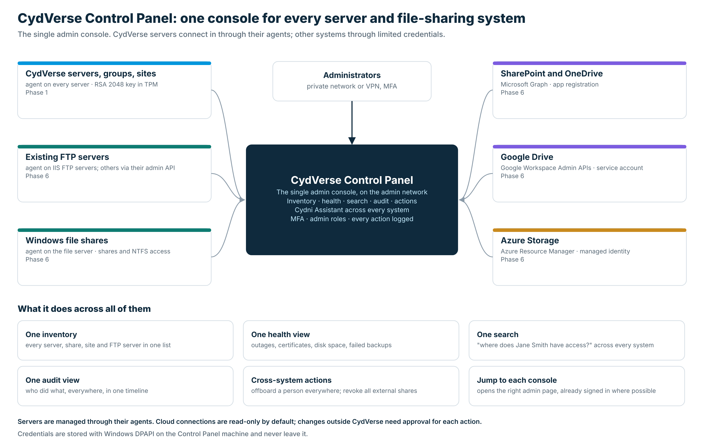
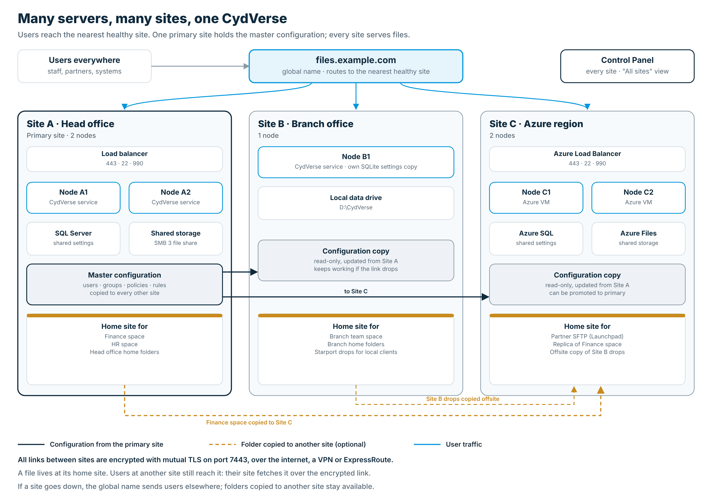
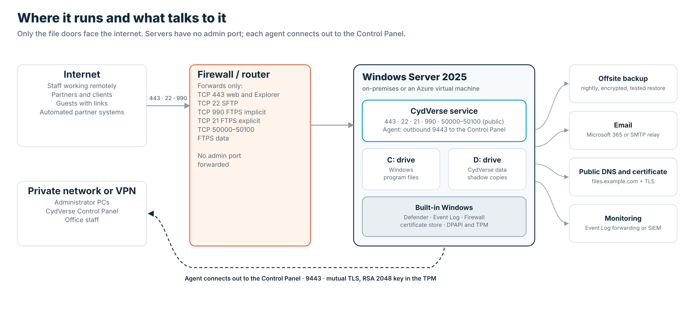
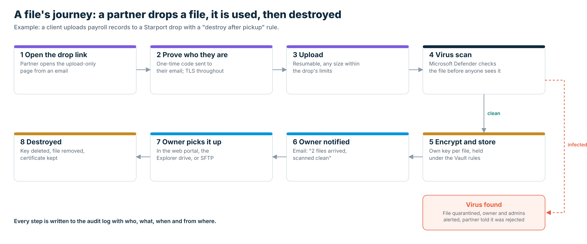
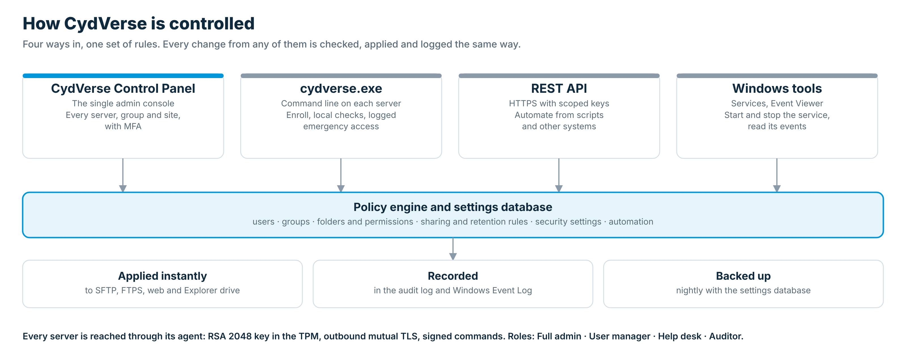

CydVerse Documents
The concept deck, the concept write-up and the full administrator manual for CydVerse, plus CydLink, the Windows tool for junction links. This version adds many FTP servers in one install, sync mode so servers cover for each other, Control Panel, multiple sites, auto-configure, the Cydni Assistant powered by Claude, and linked folders.
Downloads
What CydVerse is, many FTP servers, sync mode, sites, Control Panel, security, the assistant, junctions and phases.
The same concept in full prose, with all nine diagrams.
Installation with a checkbox per component, every Control Panel screen, agents and keys, Launchpad servers, sync mode, troubleshooting file locations.
Right-click and drag-and-drop junction links for any PC or server. Unzip, double-click Install.cmd.
The manual's Windows Server 2025 commands are real. CydVerse's installer, commands and screens are the planned design. CydLink is written but not yet run on Windows; try it on a test machine first.
Migrate users, profiles and data
- Move users, groups, folders or a whole Launchpad server to any server, sync group or site
- Bring in FileZilla Server, IIS FTP and CSV users with their data and keys
- Dry run, verified copy, switch-over in seconds, 14-day roll back
One console, an agent on every server
- The CydVerse Control Panel is the only admin console; file servers have no admin port
- Each server's agent has its own RSA 2048 key, made and kept in the TPM, and a certificate from the Control Panel
- Agents connect out over mutual TLS and check every command's signature; revoke in one click
Many FTP servers in one install
- Launchpad servers: each with its own address, ports, host key, logins and root folders
- One person can have logins on several servers; My servers shows each server, login and root folder
- A login on one server can never reach another server's folders
Sync mode: servers that cover for each other
- Install on two or more servers; each keeps a full copy of settings and files
- Uploads confirmed only after a second server has them; nothing lost in an outage
- Switch-over in seconds; a returning server catches up by itself (Phase 3)
Control Panel
- A separate app: one panel for CydVerse, FTP servers, Windows shares, SharePoint, OneDrive, Google Drive and Azure
- Opens with the CydVerse Black Hole animation, then Cydni shrinks into the corner
- One inventory, search and audit; offboard a person everywhere
Security at a glance
- MFA, modern encryption, private-only Admin Console, Defender scanning
- Mutual TLS between servers, one-time join tokens, TPM-protected keys
- Proven by code scanning, Windows checks and an outside penetration test before partners go live
Many servers, many sites
- Several nodes per site behind a load balancer; a node can fail or update without downtime
- Several sites under one global name; users reach the nearest healthy one
- Folders have a home site, with optional copies elsewhere and data residency pins
- One Admin Console with an All sites view (Phase 5)
Auto-configure and the Cydni Assistant
- Built-in checks with Fix buttons, working offline (Phase 1)
- Ask in plain words, powered by Claude Opus 5.5: search problems, explain, prepare changes
- Nothing changes without Approve; never sends file contents
- Guides and troubleshooting tips when it can't fix something
Linked folders and junctions
- Installer option on the server; create links from the console
- Links are followed only into approved locations
- Scans existing junctions carried over from old FTP servers
CydLink for Windows
- Right-click: Pick as link source, then Drop as junction here
- Drag-and-drop window from the Start menu
- Remove link never touches the files it points to
Diagrams








